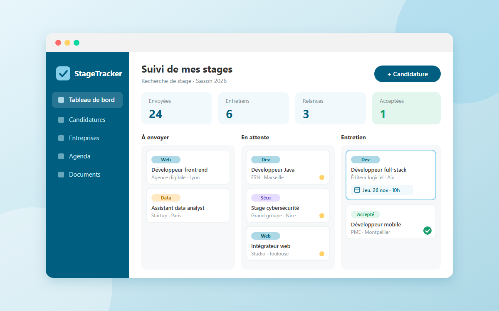
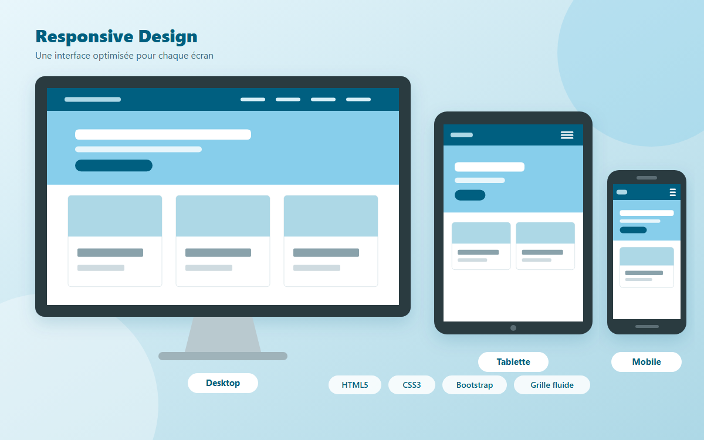
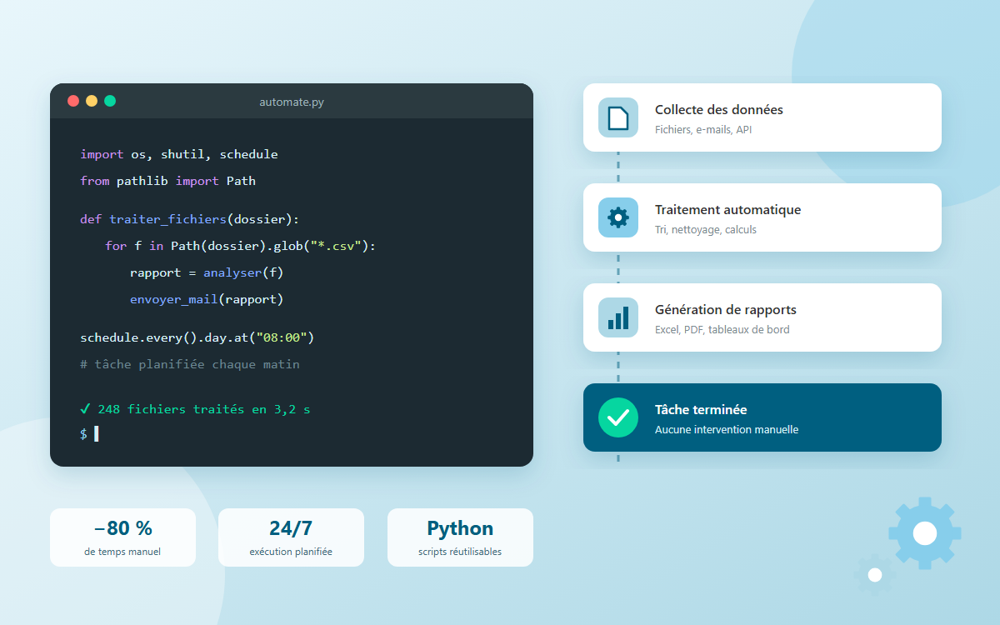
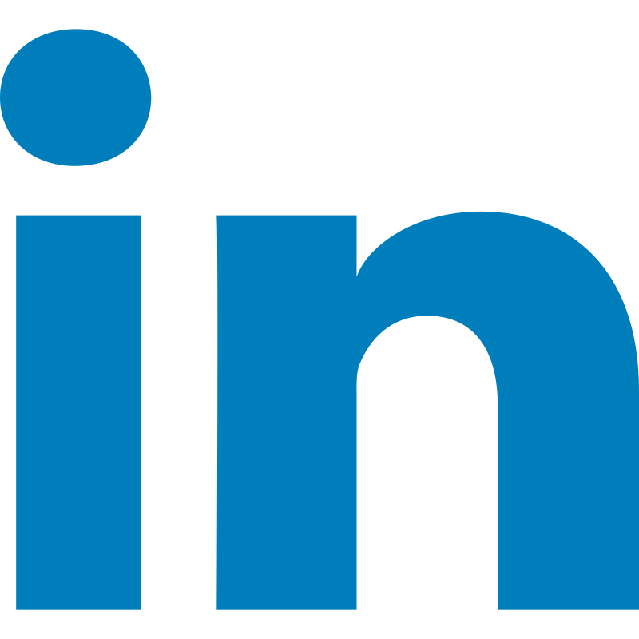

Développeur junior en formation, je m'intéresse à la conception et au développement d'applications web et logicielles.
Bienvenue sur mon portfolio, où vous pouvez découvrir mon parcours, mes compétences et mes projets.
Mon parcours a débuté par une formation mêlant informatique et électronique, avant de m'orienter progressivement vers un cursus exclusivement informatique, correspondant davantage à mon intérêt pour les technologies et particulièrement pour le développement.
En parallèle de mes études, j'ai participé à la création et à la mise en place d'une parapharmacie, dont j'ai ensuite assuré la cogestion. Cette expérience entrepreneuriale m'a permis de développer des compétences en gestion du temps et des ressources, mais également en organisation, autonomie, prise de décision, travail en équipe et résolution de problèmes. Elle m'a aussi sensibilisé à l'importance de la planification et de la mise en pratique pour concrétiser un projet.
Mon évolution dans le développement informatique repose aujourd'hui sur une combinaison entre formation académique et apprentissage autodidacte, notamment à travers la réalisation de projets. Je souhaite poursuivre cette progression en associant mes études à une expérience professionnelle. Je souhaite également continuer à explorer les technologies et les domaines liés à l'informatique, comme l'intelligence artificielle et la cybersécurité, tout en conservant le développement comme domaine central de mon parcours.
Lycée Louis le Chatelier
ISCT Toulouse
Université Ibn Tofail, Kénitra
IGENSIA Tech, Toulouse-Blagnac
À court terme, je souhaite intégrer une entreprise dans le cadre d'un stage afin de mettre en pratique mes connaissances, élargir mes compétences et évoluer au sein d'une équipe de professionnels expérimentés. Je reste ouvert aux différentes orientations du développement, qu'il s'agisse du Back-end, du Front-end ou du Full Stack.
À moyen terme, mon objectif est de poursuivre mes études en alternance, afin de renforcer mon expérience professionnelle, approfondir mes acquis et découvrir de nouvelles technologies et notions. Je souhaite également continuer à me former de manière autonome, préparer des certifications et consolider mes compétences à travers la conception et l'évolution de projets et d'applications.
À long terme, j'ambitionne d'intégrer durablement une entreprise en tant que développeur, à travers un CDI, puis de progresser vers des responsabilités techniques plus importantes, avec pour perspective une évolution vers un poste de Tech Lead ou d'architecte logiciel.
Enfin, je souhaite conserver une ouverture vers des domaines complémentaires au développement, notamment l'intelligence artificielle et la cybersécurité, que j'ai commencé à découvrir à travers un module consacré à la sécurité des développements.
Télécharger mon CV
Application de gestion des candidatures de stage permettant de centraliser les entreprises et contacts, de suivre l'évolution des candidatures, de planifier les relances et de visualiser les échéances et statistiques depuis un tableau de bord.
Java, JavaFX, Maven, SQLite, AtlantaFX
Voir le projet sur GitHub
Site web responsive offrant une interface claire et ergonomique, adaptée aux différents supports (mobile, tablette et ordinateur) pour garantir une navigation fluide et une expérience utilisateur cohérente.
HTML5, CSS3, Bootstrap
Voir le projet sur GitHub
Application d'automatisation permettant d'exécuter des tâches répétitives, de réduire les interventions manuelles et de simplifier les processus pour gagner en efficacité et en temps.
Python
En cours de création

LinkedIn